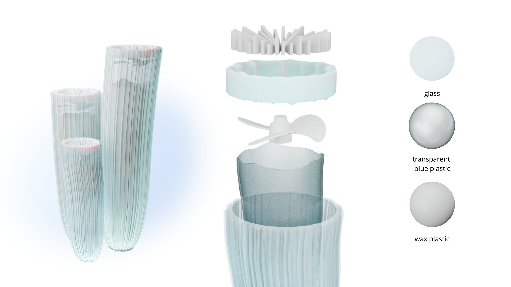
01 Product Object
Coral-like transparent purifier
A soft, organic shell language helps the object feel less industrial inside public restroom space.
Product Concept / Physical Computing
An eco-friendly device that combines air purification, plant cultivation and intelligent management to support healthier restroom environments for cleaning staff.
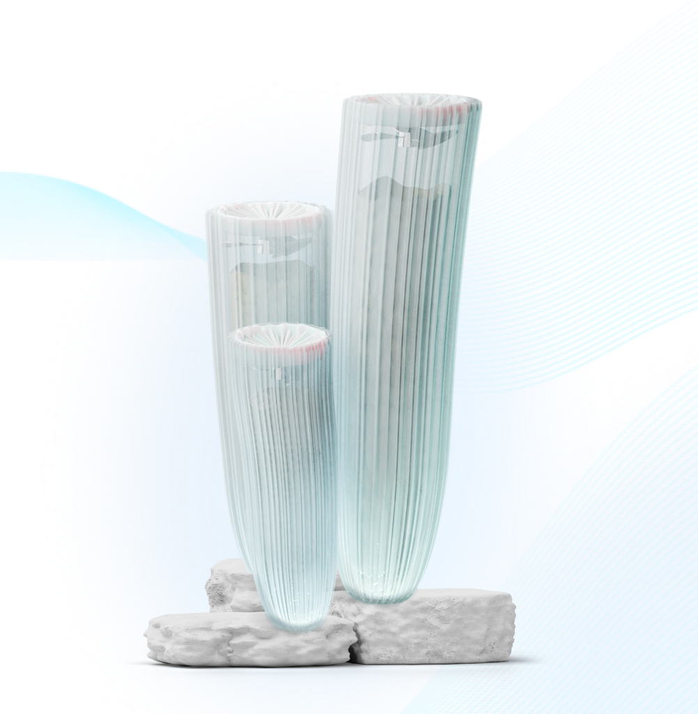
Coralline is a smart dual-core air purifier concept for public restrooms, connecting air-quality sensing, fan response, plant cultivation and staff-facing maintenance controls.
Academic Project / Product Concept / Smart Device
Product research, concept development, physical computing prototype, interface logic and visual presentation
2024
Air purifier concept, Arduino prototype, management interface, product scenario and final presentation board
Arduino, Tinkercad, physical prototyping, 3D visualization and product system thinking
Public restroom sanitation and cleaning-staff operation
This is a product-system proposal and physical computing prototype, presented through the completed visual assets, interface design and final prototype documentation.
The final proposal brings the physical purifier, ecological material language and maintenance interface into one coordinated product experience.

A soft, organic shell language helps the object feel less industrial inside public restroom space.
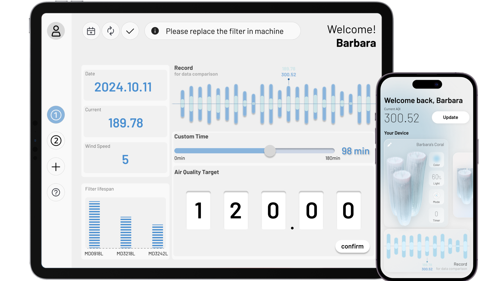
Filter lifespan, wind speed, timing and air-quality targets are organized for daily cleaning staff decisions.
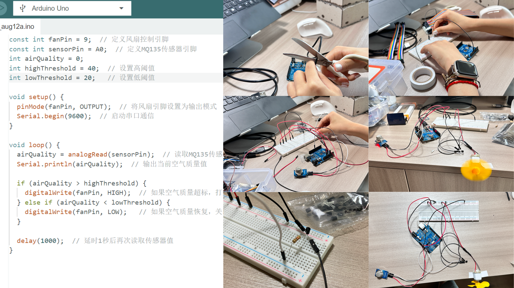
Air-quality readings drive a simple threshold logic that turns purification on and off.
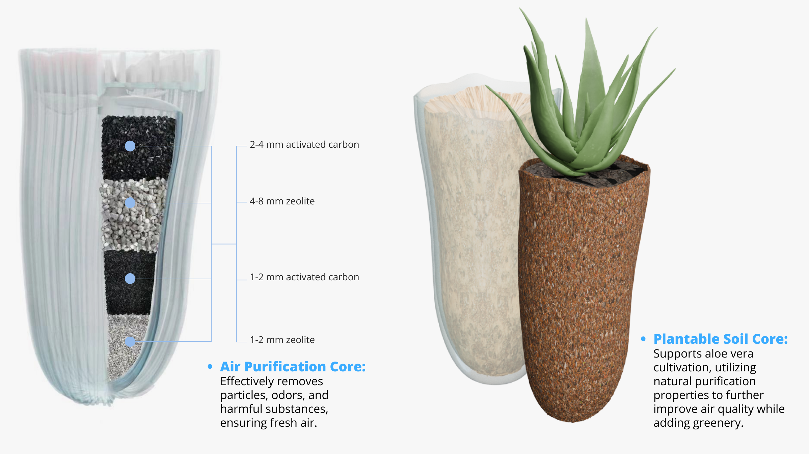
The key feature shifts from restroom placement to two complementary filter types that support odor removal and ventilation as a replaceable product system.
Coralline reframes restroom purification as a service object for cleaning staff. Instead of only filtering air, the device makes air quality, filter lifespan and operation time easier to monitor and adjust.
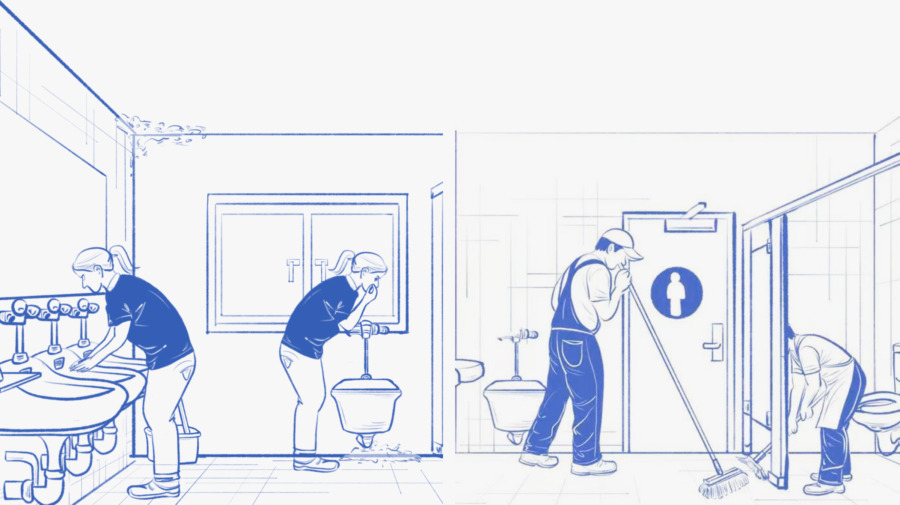
Staff need clearer feedback about when purification is needed and when it can stop.
Filter lifespan, operating time and cleaning routines are often managed separately.
The product needs to belong in public restrooms without adding more hard technical clutter.
Early directions compared purification placement, filter access, shell form and material behavior. Modeling and material exploration helped translate the concept from a restroom sanitation problem into a product with visible structure and maintainable parts.
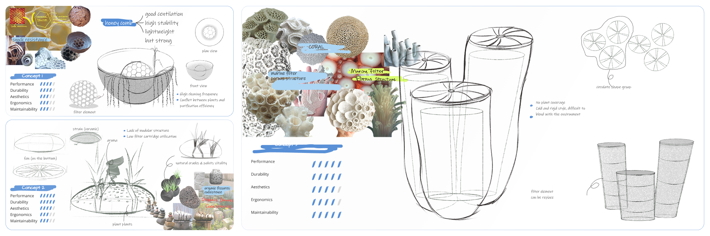
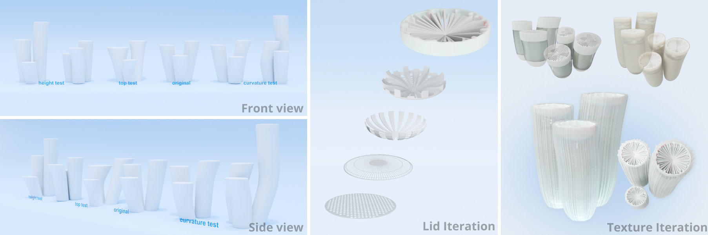
This section focuses on how the main filter materials work together, comparing odor-removal potential and airflow behavior before the product logic is translated into staff-facing controls.
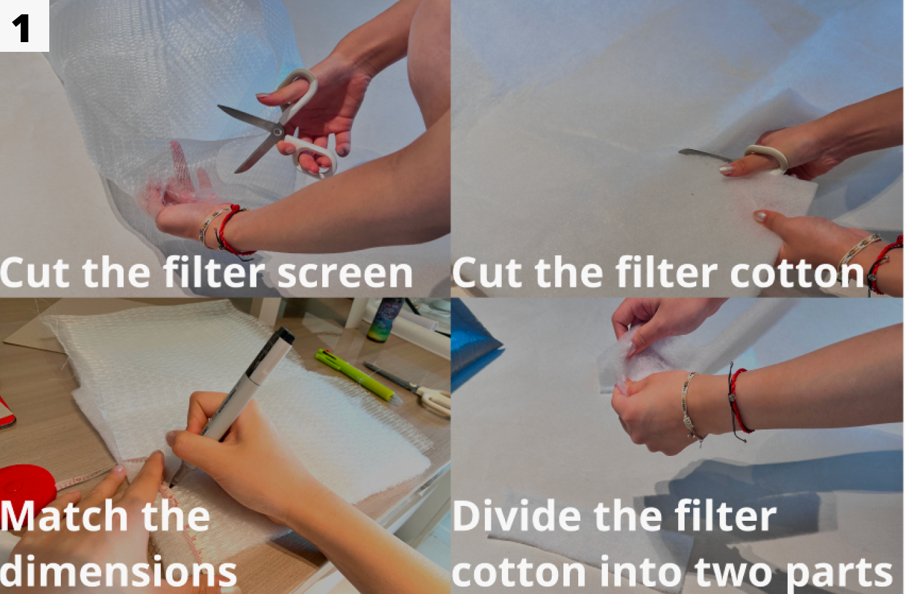
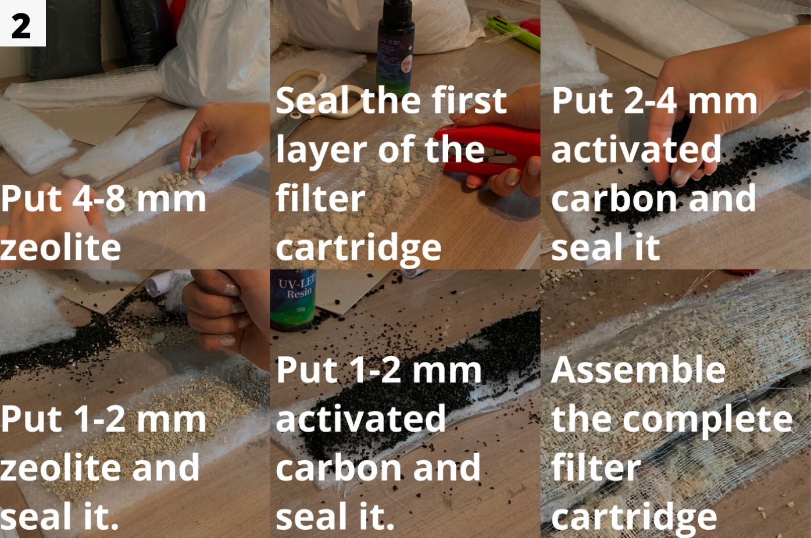
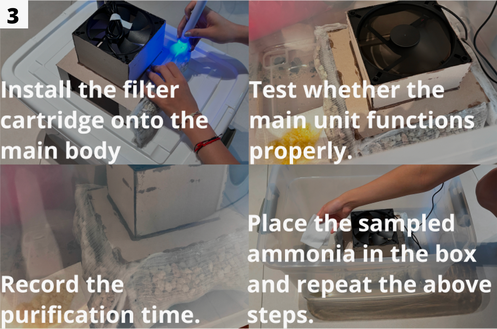
A low-fidelity test shell was used to check internal spacing, component order and maintenance access before the final product housing was developed.
Testing focused on how the filter setup could reduce unpleasant restroom smells without adding heavy maintenance.
Air movement was checked so the purifier could support circulation rather than simply contain odor.
After form, filter and ventilation logic were defined, the project would move into user testing with cleaning staff to evaluate operation clarity, refill routines and long-term restroom placement.
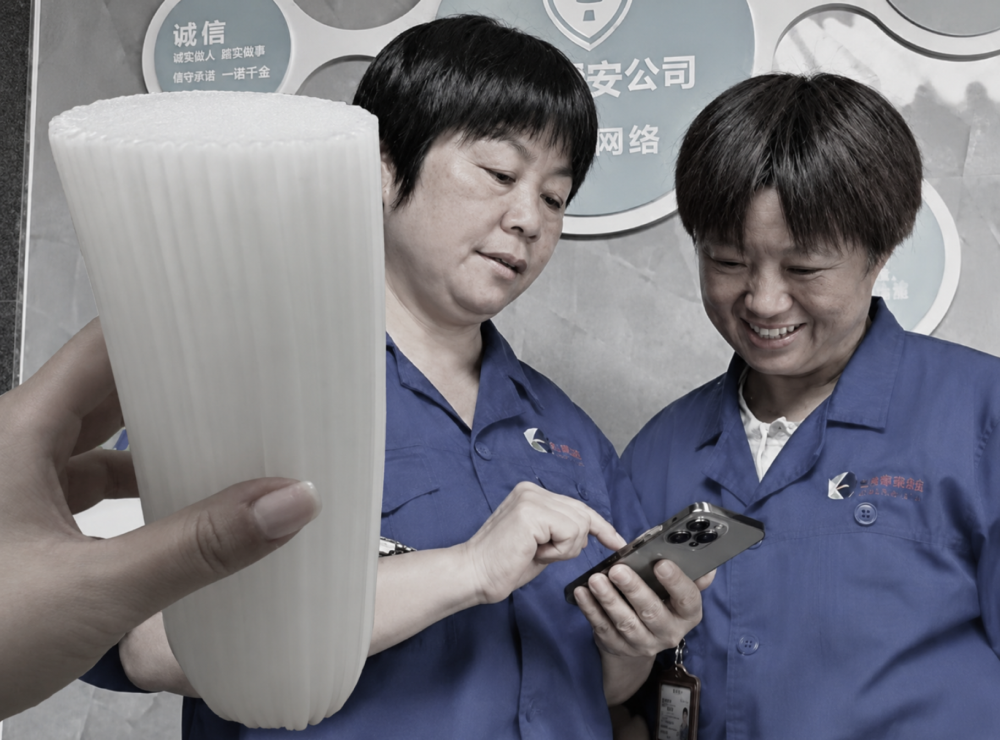
Invite cleaning staff to complete daily operation tasks and identify where status, timing or filter information feels unclear.
Test how easily filters can be checked, replaced and recorded during normal restroom cleaning cycles.
Compare wall, counter and corner positions to balance airflow, visibility, accessibility and restroom traffic.